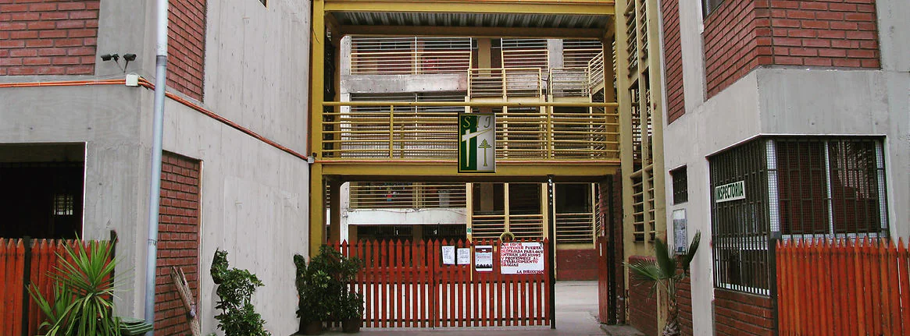

Educando generaciones desde 1993.

Comunidad educativa en Quilicura
"Dios es nuestro Padre, la tierra nuestro hogar"
Colegio San Isaac Jogues
Una comunidad educativa de Quilicura que forma desde la cercanía, la responsabilidad, la fe y el compromiso familiar.
Desde 1993trayectoria educativa
QuilicuraAv. Lo Cruzat 164
Pre-Kínder a IV Medioformación escolar completa
Descubre nuestra comunidad
Una comunidad que acompaña
Educación con propósito, cercanía y una mirada hacia el futuro.
Más de tres décadas construyendo una experiencia educativa integral, donde cada etapa escolar encuentra acompañamiento, valores y oportunidades para crecer.
Conoce nuestro proyectoUna comunidad diversa y conectada.
Desde Pre-Kínder hasta IV Medio.
Organizadas para acompañar cada ciclo.


Formación integralAprender, convivir y crecer
Vida escolar
Mucho más que una sala de clases.
La experiencia San Isaac Jogues conecta aprendizaje, pastoral, arte, deporte y participación familiar para formar personas comprometidas con su comunidad.
Comunicados
Información que mantiene conectada a nuestra comunidad.
Accesos rápidos
Horarios y recursos académicos
Evaluaciones
Calendario de pruebas
Acceso al Drive institucional para calendario de evaluaciones.
EvaluaciónPlan de evaluación
Acceso al Drive institucional para planificación de evaluaciones.
BibliotecaBiblioteca Escolar Digital
Plataforma de lectura digital del Ministerio de Educación.
ContactoCanales de atención
Teléfonos, correo, dirección y horarios de atención.
Atención
¿Necesitas contactar al colegio?
Secretaría, inspectoría, correo institucional y dirección están disponibles en la página de contacto.